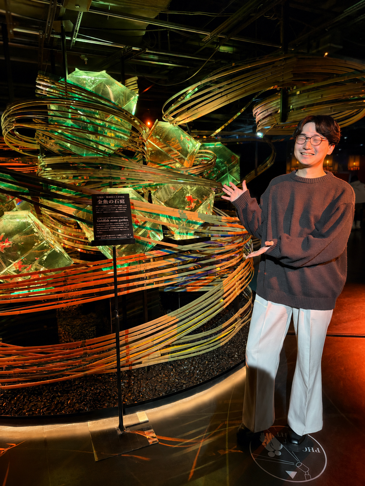
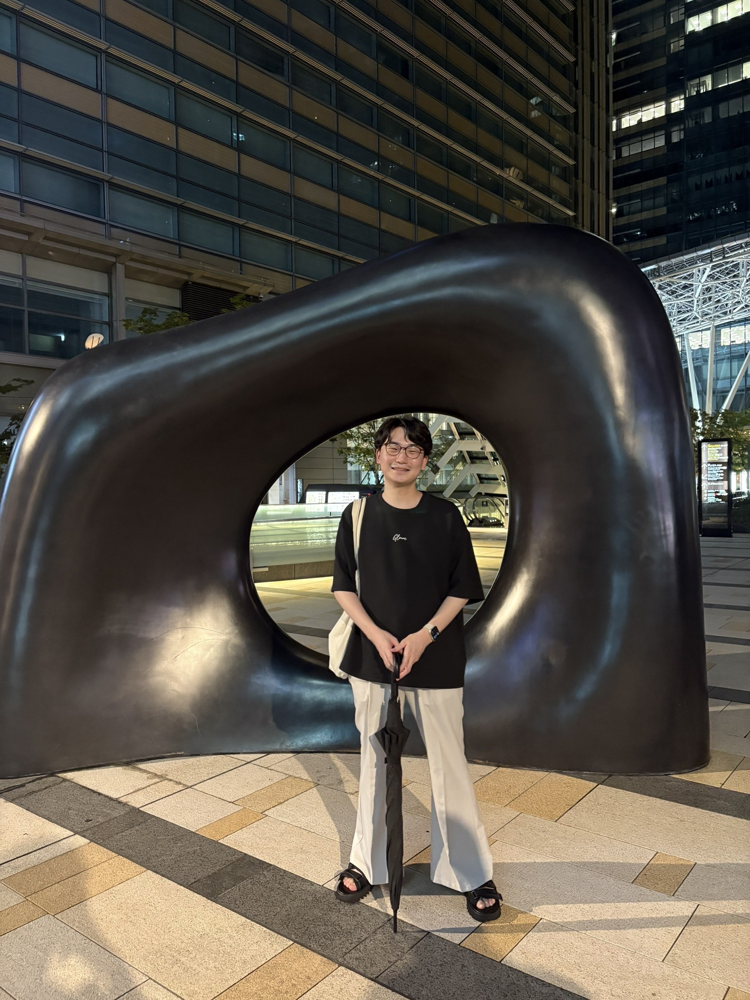

私について
吉野 貴大 Takahiro Yoshino
UI／Webデザイナーとして、課題整理・情報設計からUIデザイン、実装支援まで一貫して取り組んでいます。
ユーザーの声と事業の目的をつなぎ、「これからの当たり前」をつくるデザインを目指しています。
スクロールして見る


プロフィール
吉野 貴大（よしの たかひろ）
UI／Webデザイナー
HAL大阪を卒業後、アジアクエスト株式会社で業務システムやアプリのUIデザイン、要件定義、顧客との仕様調整を担当しました。現在は株式会社Lightで、一人目の正社員UIデザイナーとして、ライブ配信サービス「Palmu」のUIデザイン全般とデザインシステムの構築を主導しています。
大切にしていること
「これからの当たり前をつくるデザイナー」
技術と人々のニーズをつなぎ、日常をより良くするデザインを追求しています。ユーザーが迷う理由を整理し、チームと認識をそろえながら、使いやすさと実現性を両立させることを大切にしています。
得意なこと
- 課題整理からUI設計まで
- 現状分析やユーザーリサーチをもとに課題を整理し、情報設計・画面設計まで一貫して担当。ランキング刷新やオンボーディング改善に取り組んできました。
- デザインシステムの構築
- デザイントークンの定義、Figmaのコンポーネントライブラリ、実装用ドキュメントをゼロから整備。主要コンポーネント30種類以上、100以上のバリアントを管理しました。
- チームと実装をつなぐ設計
- 顧客との要件調整や、PdM・エンジニアとの協働を経験。iOS・Androidの違いを考慮した設計や、業務システムの複雑な情報を整理するUIを得意としています。
職歴
-
2024年9月〜現在
株式会社Light
一人目の正社員UIデザイナーとして入社。PalmuのUIデザイン、デザインシステム構築、ランキング刷新、オンボーディング改善を担当。
-
2023年4月〜2024年8月
アジアクエスト株式会社
UI／Webデザイナーとして、楽天ステイや3DKフィールドなどのプロジェクトに参画。要件定義、顧客折衝、UIデザインを担当し、社内勉強会の企画・登壇にも取り組みました。
-
2021年12月〜（6か月）
チームラボ株式会社
デザイナーとしてインターンシップに参加。
-
2021年8月〜（3か月）
株式会社ノベルワークス
デザイナーとしてインターンシップに参加。
学歴・受賞歴
2019年4月〜2023年3月
HAL大阪 高度情報学科 WEB開発専攻
卒業制作「Drop Go」でPM兼デザイナーを担当。地域の活性化を目指すサービスをチームで企画・開発し、朝日新聞社賞を受賞しました。
スキル・ツール
- Figma5年以上
- Adobe XD5年以上
- Photoshop3年以上
- Illustrator2年以上
- HTML・CSS3年以上
経験年数は2026年9月の職務経歴書に基づき、インターン期間を含みます。
資格
- 2021年3月 基本情報技術者試験 合格
- 2019年12月 Webデザイナー検定ベーシック 合格
- 2019年10月 情報活用能力検定2級 合格
- 2018年7月 ビジネス文書実務検定2級 合格